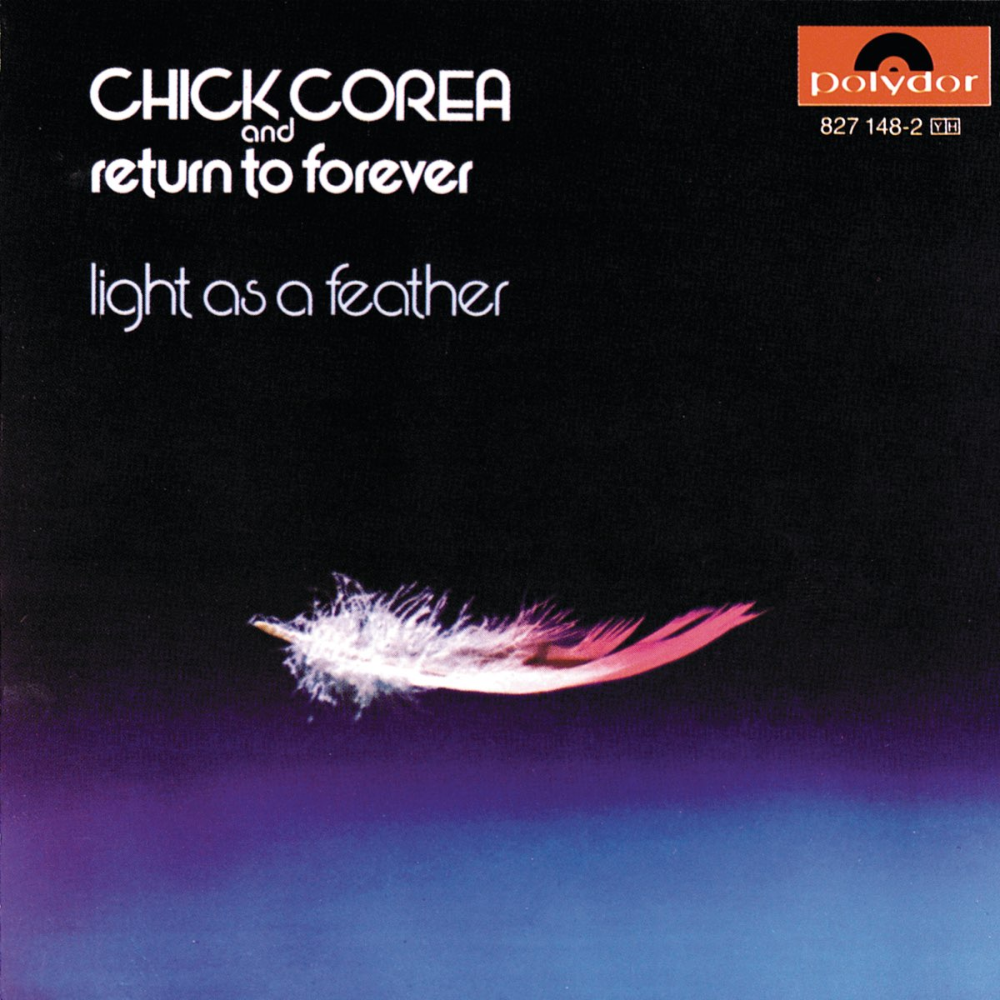

boombox-489837
MFG.D 2024'12
[Generation]:1960s-70s
⬊⬊⬊⬊


info
Chick Corea
1973
 領取你的專屬磁片
領取你的專屬磁片
Armando Anthony "Chick"
Corea（1941年6月12日—2021年2月9日）是美國的爵士鋼琴家、鍵盤手以及作曲家。
他作的許多曲子都被視為是爵士的標準曲目。在1960年是Miles
Davis樂隊的一份子，他同時參與了融合爵士的建立與茁壯。在1970年代他組成了回歸永恆樂團（Return
to Forever）。 Corea與Herbie Hancock，McCoy Tyner 以及Keith
Jarrett等人被視為在後John Coltrane時代最重要的爵士鋼琴家。
他的音樂生涯，一直在追求探索不同的音樂領域。這種渴望讓他無論在純爵士以及流行爵士上，都具有舉足輕重的角色，他也是過去四十年，最重要也最被廣泛研究的音樂家之一。